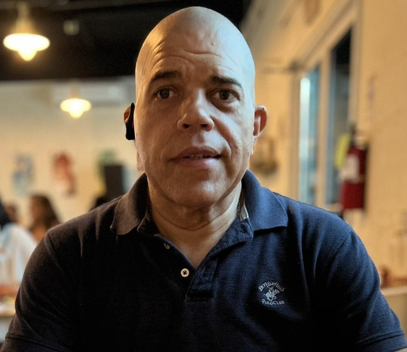

Javier Fernandez

Summary
I am a Certified LOA Life Coach and a Certified Power BI Data System
Analyst and Analyst/Programmer
Education
- Bachelor's Degree in Computer Programming and Associate's Degree in
Business Administration E.D.P. College (1985-1989
Work Experience
-
Computer Operator - Asociacion de Maestros
1989
- Manages and monitors the system's operation
- Run Data Backups and Restore
- Troubleshoot basic hardware and software issues
- Handling Job Queues and Spool Files
-
Junior Programmer - Asociacion De Maestros
1990
- Assist in codding, debugging and testing software
- Troubleshoot issues and provide support to end-users
-
Senior Programmer - Asociacion De Maestros
1991 - November 1992
- Design complex software solutions
- Provide technical guidance to junior programmers
-
System Analyst/Programmer - National Insurance Company
-
System Analyst/Programmer - Telefonica España
-
System Analyst/Programmer - Multinational Insurance Company
April 2019 - Present
- Requirement Gathering
- System Design
- System Evaluation
- Project Management
- Quality Assurance
- Coding
- Debugging
- Testing
Skills
- IBM System/34
- IBM System/36
- IBM System/38
- IBM AS/400
- RPG
- COBOL
- SQL Server Management Studio
- Oracle
- MS Office 365
- Power BI Data Analyst
- HTML5
- CSS3
- JavaScript
Award and Certifications
- Employee of the Year - Multinational Insurance Company (2022)
Other